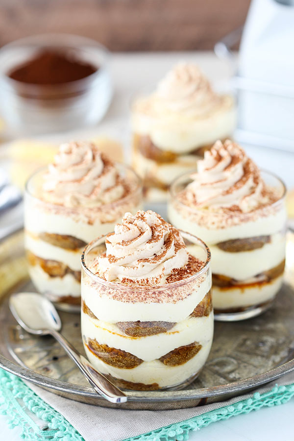
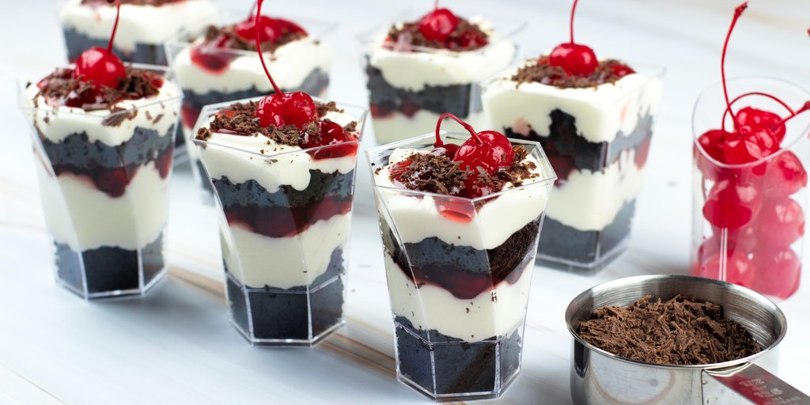

Bakery Napoleons are good, but this make-at-home version, with puff pastry, vanilla pudding, fresh strawberries and lots of whipped cream, is so much better!
Difficulty: Easy
Cooking and Prep: 1 hr 25 min
Serves: 8
Allergies: Contains GLUTEN, WHEAT
Ingredients
Main Ingredients
1/2 of a 17.3-ounce package Pepperidge Farm® Puff Pastry Sheets (1 sheet), thawed
1 package (about 3 ounces) instant vanilla pudding and pie filling mix
1 cup milk (can use Parve milk also)
1 1/2 cup sweetened whipped cream or thawed frozen whipped topping
1 1/4 cup sliced strawberries
2 tablespoons confectioners’ sugar
Prepare the Napoleons
Heat the oven to 400°F.
Unfold the pastry sheet on a lightly floured surface. Cut the pastry sheet into 3 strips along the fold marks. Cut each strip into 4 rectangles. Place the pastries onto a baking sheet.
Bake for 15 minutes or until the pastries are golden brown. Let the pastries cool on the baking sheet on a wire rack for 10 minutes. Split each pastry into 2 layers, making 24 in all.
Prepare the pudding mix according to the package directions except use 1 cup milk. Fold in the whipped cream.
Reserve 8 top pastry layers. Spread 2 tablespoons pudding mixture on each of 8 bottom pastry layers. Top each with 1 tablespoon strawberries and another pastry layer. Top with the remaining pudding mixture, strawberries and the reserved top pastry layers. Sprinkle with the confectioners’ sugar.
Ingredient Note: For 1 1/2 cups sweetened whipped cream, beat 3/4 cup heavy cream, 2 tablespoons sugar and 1/4 teaspoon vanilla extract in a medium bowl with an electric mixer on high speed until stiff peaks form.
Serving Suggestion: Drizzle with spoonfuls of chocolate sauce, if desired.

Mini Tiramisu Trifles
Mini Tiramisu Trifles with a layer of mascarpone cheese, ladyfingers and espresso! A delicious, easy & fun way to enjoy tiramisu & trifle at the same time!
Difficulty: Easy
Cooking and Prep: 30 min
Serves: 5-6 mini trifles
Ingredients
Mascarpone Filling
20 oz (565g) mascarpone cheese
3 tbsp (39g) sugar
1 cup (240ml) heavy whipping cream, cold
1/2 cup (58g) powdered sugar
1 tsp vanilla extract
Espresso Mixture
3/4 cup (180ml) hot water
3 tbsp (45ml) instant espresso powder
3 tbsp (39g) sugar
36 lady fingers
Whipped Cream
1/2 cup (120ml) heavy whipping cream
1/4 cup (29g) powdered sugar
2 tbsp (30ml) kahlua
Prepare the Mini Tiramisu Trifles
Mix mascarpone cheese and sugar together until combined. Do not over mix or the mascarpone cheese can thin out. Set aside.
In another bowl, add the heavy whipping cream, powdered sugar and vanilla extract and whip until stiff peaks form.
Carefully fold the whipped cream into the mascarpone cheese mixture. Set aside.
In another bowl, combine the hot water, espresso powder and sugar.
To layer the trifles, dip the ladyfingers into the espresso mixture one at a time and place into the bottom of the trifle cup. Use two to three ladyfingers and break into pieces as needed so they fit in the cup and create a full layer.
Pipe or spoon a layer of mascarpone filling on top of the ladyfingers.
Repeat another layer of ladyfingers and mascarpone filling.
After completing the trifles, make the whipped cream.
Add the heavy whipping cream, powdered sugar and kahlua to a large mixer bowl and whip until stiff peaks form.
Pipe a swirl of whipped cream on top of each trifle, then sprinkle with cocoa powder, if desired.
Refrigerate trifles until ready to serve. Trifles are best for 2-3 days.

Mini Dessert Cups Black Forest Cake
The Black Forest Cake Mini Dessert Cups are dashing with layers of chocolate cake crumble, whipped cream and cherries. It's a simple and beautiful small version of our favorite classic cake in DLux mini dessert cups.
Difficulty: Easy
Cooking and Prep: 20 min
Serves: 18-20 mini cups
Ingredients
Main Ingredients
1 lb chocolate cake
3/4 cup powdered sugar
1 cup heavy cream
1 cup cherry pie filling
1/4 cup semisweet chocolate shavings
1 cup cherries with stems
Prepare the Black Forest Cake Mini Dessert Cups
Crumble chocolate cake and set aside.
Whip heavy cream and powdered sugar until it forms firm peaks.
Fill about 1/2 inch of the mini cups with chocolate cake crumbles.
Pipe whipped cream about 1/2 inch. Then add 1 tsp of cherry pie filling.
Repeat layers. You will end up of 2 layers of each ingredient.
Top with whipped cream and garnish with cherry and chocolate shavings.